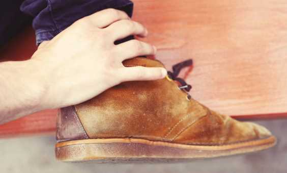
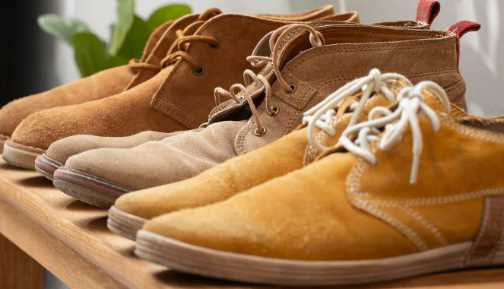

Cómo Limpiar Zapatillas de Gamuza Paso a Paso

Herramientas Necesarias
| Herramienta |
Descripción |
| Cepillo especial para gamuza |
Un cepillo suave diseñado para limpiar sin dañar la delicada textura de la gamuza. |
| Borrador de gamuza |
Para eliminar manchas o marcas ligeras. |
| Agua destilada |
Para evitar manchas por minerales en el agua. |
| Vinagre blanco |
Una solución casera para eliminar manchas más difíciles. |
| Paño suave |
Para secar y aplicar suavemente las soluciones de limpieza. |
Pasos para Limpiar las Zapatillas de Gamuza
- Paso 1: Cepilla suavemente las zapatillas con un cepillo para gamuza para eliminar el polvo y la suciedad superficial.
- Paso 2: Usa un borrador de gamuza para las manchas pequeñas. Frota suavemente sobre la mancha hasta que desaparezca.
- Paso 3: Si hay manchas más profundas, humedece ligeramente un paño con agua destilada y vinagre blanco (mezclados en partes iguales) y aplícalo sobre la mancha.
- Paso 4: Deja que las zapatillas se sequen al aire en un lugar fresco y seco, lejos de la luz solar directa.
- Paso 5: Después de secarse, cepilla nuevamente las zapatillas con el cepillo para gamuza para restaurar su textura suave.

Consejo Adicional: Evita Mojar Demasiado la Gamuza
La gamuza es un material delicado que puede dañarse si se moja en exceso. Usa siempre la menor cantidad de agua posible para evitar manchas de agua o deformaciones.
Consejo Adicional: Usa un Protector para Gamuza
Después de limpiar las zapatillas, aplica un protector para gamuza para evitar futuras manchas y protegerlas del agua.
Siguiendo esta guía paso a paso, puedes mantener tus zapatillas de gamuza en buen estado sin dañar su delicado material.